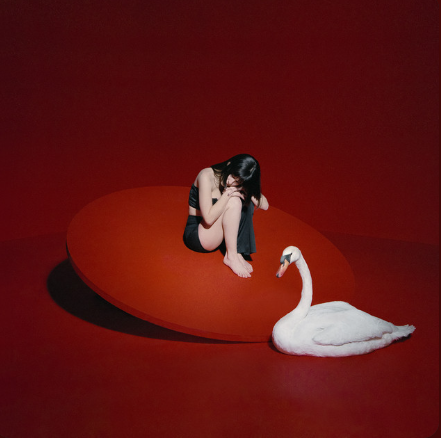

Heavy
THE MARÍAS
0:004:13
🔉
HTML made by SrYor
I'm heavySoy pesado
I'm by your sideEstoy a tu lado
Forget me 'cause I know what I needOlvídame porque sé lo que necesito
Like a loser like me could be fineComo si un perdedor como yo pudiera estar bien
I'm heavySoy pesado
Alone insideSolo por dentro
Don't tell me what I want, what I needNo me digas lo que quiero, lo que necesito
Like a loser like me will be fineComo si un perdedor como yo estará bien
Maybe I'm living in my headTal vez estoy viviendo en mi cabeza
Maybe I'm living to pretendTal vez estoy viviendo para fingir
Maybe I wanna stay in bedTal vez quiero quedarme en la cama
Far from the weight of the world in my handsLejos del peso del mundo en mis manos
'Cause they don't understandPorque no entienden
Is someone telling me don't get in the water?¿Alguien me está diciendo "no entres en el agua"?
What have I done?¿Qué he hecho?
I don't wanna get lost inside the color under my tongueNo quiero perderme dentro del color bajo mi lengua
'Cause I don't wanna be in love with anotherPorque no quiero estar enamorado de otro
Even in another lifeIncluso en otra vida
Can someone tell me it's alright to be covered¿Alguien puede decirme que está bien estar cubierto
Underneath the covers? But IDebajo de las cobijas? Pero yo
No, I don't need to sleep anymoreNo, ya no necesito dormir
Is someone banging at my door?¿Alguien está golpeando en mi puerta
When I just wanna be alone?Cuando solo quiero estar solo?
Is someone banging at my door?¿Alguien está golpeando en mi puerta?
Je ne sais pas qui est iciNo sé quién está aquí
Is someone banging at my door¿Alguien está golpeando en mi puerta
When I just wanna be aloneCuando solo quiero estar solo?
Is someone banging at my door, door, door, door?¿Alguien está golpeando en mi puerta, puerta, puerta, puerta?
Door, door, door, door, at my doorPuerta, puerta, puerta, puerta, mi puerta
Is someone banging at my door?¿Alguien está golpeando en mi puerta?
'Cause I just wanna be alonePorque solo quiero estar solo
Yeah, I just wanna be aloneSí, solo quiero estar solo
I just wanna be aloneSolo quiero estar solo
Yeah, I just wanna be aloneSí, solo quiero estar solo
I just wanna be aloneSolo quiero estar solo